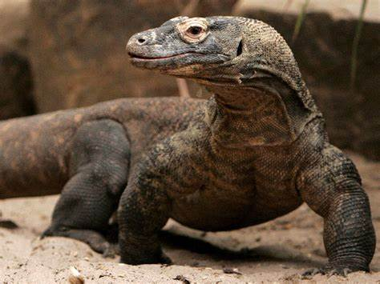
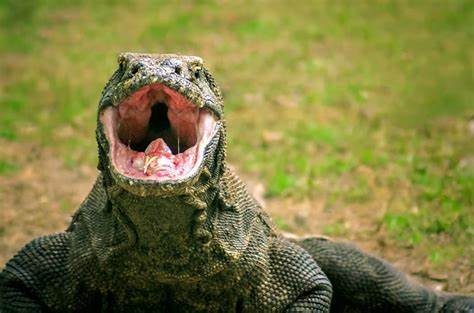
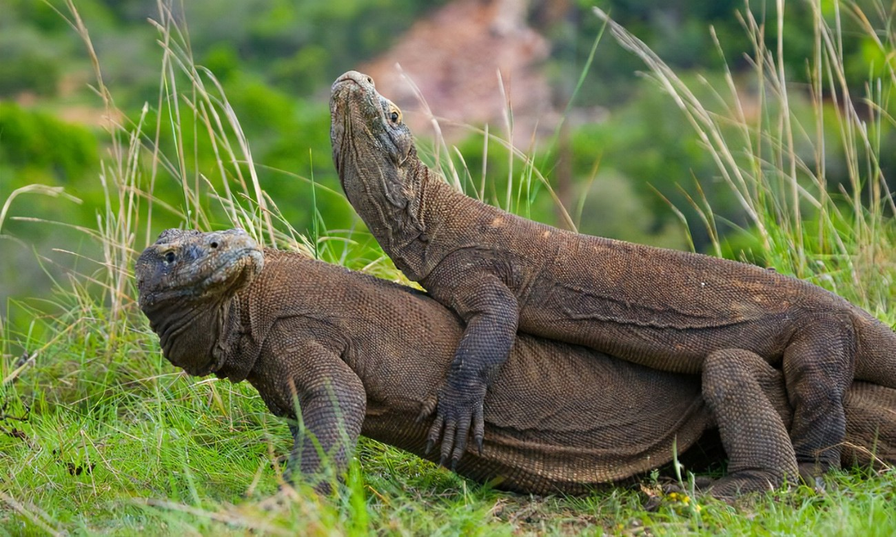

El lagarto gigante de Indonesia
El dragón de Komodo es el lagarto más grande del mundo y uno de los depredadores más impresionantes de la naturaleza. Habita en unas pocas islas de Indonesia, donde es considerado un tesoro nacional. Su aspecto prehistórico y su poderosa mordida lo han convertido en una leyenda viva.

Estilo de vida y relaciones sociales

Los dragones de Komodo son animales solitarios y territoriales. Pasan la mayor parte del tiempo patrullando su territorio en busca de alimento. Aunque pueden reunirse en torno a una presa grande, suelen evitar el contacto con otros individuos fuera de la época de reproducción. Su vida social es limitada, pero muestran jerarquías claras cuando compiten por comida.
Dieta y alimentación
Son carnívoros y se alimentan principalmente de ciervos, jabalíes, aves y, ocasionalmente, carroña. Su mordida es letal gracias a las bacterias y toxinas presentes en su saliva. Son capaces de detectar presas a varios kilómetros de distancia usando su lengua bífida y su agudo sentido del olfato.
Habilidades y características

El dragón de Komodo puede medir hasta 3 metros y pesar más de 70 kilos. Es un excelente nadador y corredor en distancias cortas. Su piel está cubierta de escamas reforzadas con pequeños huesos, lo que le da una protección extra. Además, su cola es fuerte y puede usarla como arma defensiva.
Esperanza de vida y amenazas
En la naturaleza, los dragones de Komodo pueden vivir hasta 30 años. Sus principales amenazas son la pérdida de hábitat, la caza furtiva y los desastres naturales. Aunque no tienen depredadores naturales, los humanos representan el mayor peligro para su supervivencia.
Reproducción y vínculos familiares
